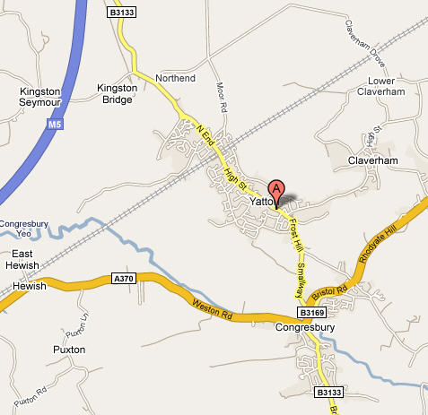

PCMagic
PCMagic is a local computer retailer in Yatton, Somerset, offering a selection of top brand name computers and accessories. PCMagic supports customers in Yatton, and surrounding towns and vilages either within the shop or in your own home.
Our business philosophy is simple: To give customers the best possible service and support that, we as individuals would like to receive, using our years of experience and at a competitive price. A friendly approach to people, supporting the local community.
Dave & Paul welcome you to PCMAGIC and will do our best to help guide you and offer you the best solution for your needs. Try us and return time and time again to the same faces to help you!! We talk english not computer speak!
Products
We offer our customers 1000’s of quality products, and our list of product categories and products is growing every day. PCMagic customers know they're getting the best prices and service across a huge range of computer technology products like desktops, notebooks, printers, networking, digital cameras, software, storage and more.
Customers
We have built up over the years many loyal customers who support us and recommend us to their friends and family. We have customers from the young to the "silver surfers" introducing many retired people in the area to the the world of computers. We can make the the journey much easier for you with our friendly aproach in help and support.
Opening Hours
Monday - Friday 10:30-5pm, Saturday 9-12 noon, See door notice for holidays
Contact
Telephone: 01934 877600 Email: sales@pcmagiconline.co.uk
Location
15 Yatton High Street, North Somerset, BS49 4JD
